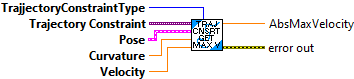

Calculate the Maximum velocity for the provided constraint and conditions.
Note that this only works for regular constraints. Constraints that contain constraints, such as the Rectangular Region and Elliptical Region, are not calculated by this routine.
Parameters:
- TrajectoryConstraintType -- Enum indicating the type of constraing being passed.
- Constraint - Variant containing the onstraint data structure
- statePose - current traj state Pose
- curvature - current traj curvature
- maxVelocity - current traj max velocity
Returns
- maxVelocity - Maximum allowed velocity.
Return the minimum and maximum allowed acceleration given the provided conditions.
Note that this only works for regular constraints. Constraints that contain constraints, such as the Rectangular Region and Elliptical Region, are not calculated by this routine.
Parameters:
- TrajectoryConstraintType -- Enum indicating the type of constraing being passed.
- Constraint - Variant containing the onstraint data structure
- statePose - current traj state Pose
- curvature - current traj curvature
- maxVelocity - current traj max velocity
Returns
- MinMaxVelocity - Data cluster containing the Minimum and Maximum acceleration..

Determines the type of a passed trajectory constraint.
Parameters:
-Constraint - Variant containing the constraint to determine the type.
Returns:
- TrajjectoryConstraintType -- Enum containing the constraint type
- Type Found -- Returns TRUE if the variant is a valid constraint type.